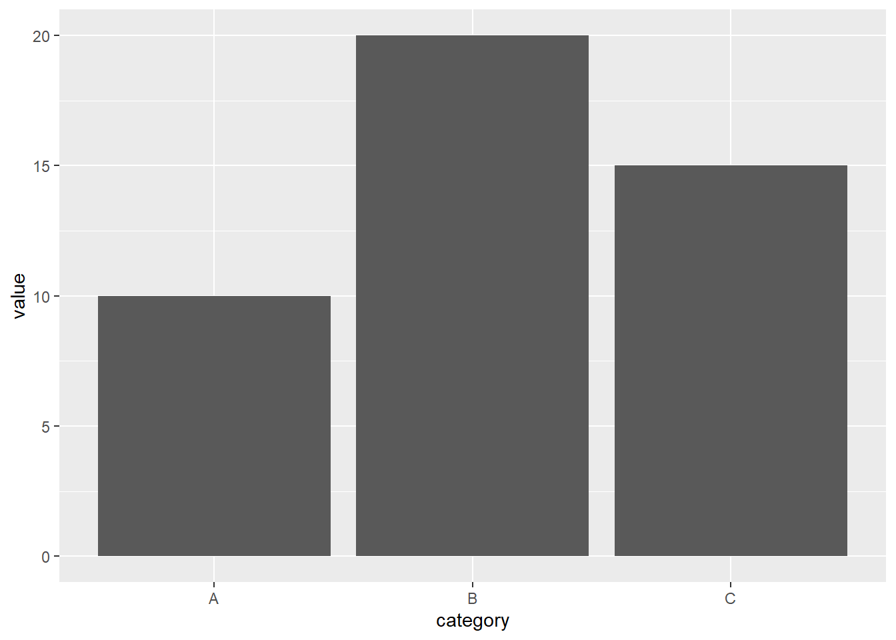

Code
library(ggplot2)
data <- data.frame(
category = c("A", "B", "C"),
value = c(10, 20, 15)
)
ggplot(data, aes(x = category, y = value)) +
geom_col()
library(ggplot2)
data <- data.frame(
category = c("A", "B", "C"),
value = c(10, 20, 15)
)
ggplot(data, aes(x = category, y = value)) +
geom_col()
Warning: package 'highcharter' was built under R version 4.5.3Registered S3 method overwritten by 'quantmod':
method from
as.zoo.data.frame zoo Highcharts (www.highcharts.com) is a Highsoft software product which isnot free for commercial and Governmental use